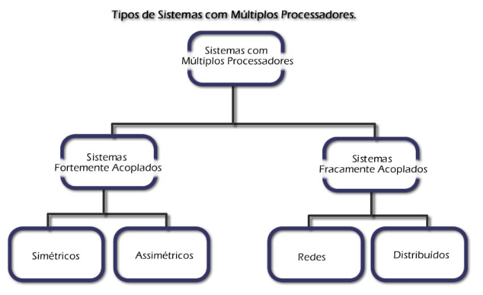

Criador do algoritmo para o problema do caminho mínimo (também conhecido como algoritmo de Dijkstra)
tambem é responsavel pela criação do Sistema Operacional THE e e a construção de semáforos para coordenar múltiplos processadores e programas.(exemplo abaixo)

Dijkstra tambem é responsavel por desenvolver o conceito a auto-estabilização na área de sistemas distribuídos, uma forma alternativa de garantir a confiança de um sistema.(exemplo abaixo)
Ele cunhou a frase "programação estruturada "e, durante a década de 1970, essa se tornou a nova ortodoxia da programação. Suas idéias sobre programação estruturada ajudaram a estabelecer as bases para o nascimento e o desenvolvimento da disciplina profissional de engenharia de software, permitindo que os programadores organizassem e gerenciar projetos de software cada vez mais complexos.
Dijkstra aposentou-se a partir do ano 2000, Faleceu em Nuenen, Países Baixos, em 6 de agosto de 2002, após longa luta contra o câncer.